A semana de medição
passa a uma manhã de validação.
Uma plataforma feita à medida da Concroc que junta obras, orçamentação, medições, faturas de fornecedores e cotações num só sítio, ligada ao PHC. Construída em cima dos ficheiros reais que o Ricardo nos enviou.
Cinco coisas que o Ricardo nos disse
Uma semana por orçamento
A medição de quantidades de materiais e mão de obra leva perto de uma semana por obra. Cerca de 60% desse tempo está na estabilidade.
Dois monitores, um Excel
O projeto num ecrã, as tabelas no outro, e a informação transcrita à mão, elemento a elemento.
Faturas por email
90% das faturas de fornecedores chegam por email e entram no PHC à mão. Os mapas de controlo de obra ficam para trás.
Preços que envelhecem
A base de preços de materiais e fornecedores não acompanha as faturas reais. As cotações a subempreiteiros fazem-se à mão.
Ferramentas que não poupam
O Togal obrigava a selecionar todos os cantos e a dizer o que é cada parede. No fundo, era o vosso Excel com outra cara.
O objetivo
Nas palavras do Ricardo: "não queremos ver mais coisas, queremos perder menos tempo à volta dele".
O problema não é falta de trabalho. É o tempo que a informação demora a chegar ao sítio certo.
Os ficheiros que nos enviaram, já abertos e lidos
Tudo o que vem a seguir foi construído em cima destes ficheiros. Nada é genérico.
Ponto a ponto, o que fazemos com cada pedido
A numeração é a do vosso documento. Cada linha diz o que entra, em que fase, e se há alguma condição.
| # | O que pediram | O que a plataforma faz | Fase | Estado |
|---|---|---|---|---|
| 1 | Plataforma central de obras e tarefas | Obras, tarefas encadeadas pela vossa sequência, responsáveis, prazos, alertas, subtarefas, aprovações, cronograma, arquivo por obra, tarefas por voz, telemóvel e tablet. | 1 | fazemos |
| 3 | Integração com o PHC | Clientes, fornecedores, artigos, faturação, documentos, pagamentos e conta corrente pela API que já têm. O que a API não expuser identifica-se antes de arrancar. | 1 | fazemos · confirmar API |
| 4 | Clientes, pagamentos e cobranças | Faturado, recebido, dívida, vencidas, por cliente e por obra, antiguidade, alertas e área de acompanhamento. Lê a faturação do PHC. | 3 | fazemos |
| 5 | Integração bancária e reconciliação | Importação dos movimentos das contas, identificação de recebimentos e pagamentos, associação a clientes, fornecedores e obras, cruzamento com o PHC, movimentos duvidosos sinalizados. Várias contas. Começa por importação de extratos; ligação direta aos bancos depois. | 3 | fazemos |
| 6 | Orçamentação com IA | Capítulos e rubricas vossas, pesquisa de rubricas semelhantes, preços históricos e de fornecedores, atualização a partir das faturas, margens, resumos, comparação com obras anteriores, sinalização de valores anormais. | 2 | fazemos |
| 7 | Medições automáticas dos projetos | Estabilidade: provado com o vosso ficheiro. Arquitetura: áreas, vãos, cotas e legendas já saem; perímetros por divisão com primeiro resultado no vosso DWG (9 divisões fechadas com a área conferida, garagem a confirmar), a validar com mais dois projetos; materiais por parede classificados por vós em lote. | 2 · POC | estabilidade feita · arquitetura em curso |
| 8 | Pedidos de preços e mapas comparativos | Pedidos por email quando a tarefa abre, leitura das propostas, extração de preços e âmbito, mapa comparativo, apoio à adjudicação. Por email, como pediram avaliar; portal próprio de fornecedores se vier a justificar-se. | 2 | fazemos |
| 9 | Diário e acompanhamento das obras | Registo diário no telemóvel: trabalhos, pessoas, subempreiteiros, equipamentos, fotos, ocorrências, decisões. Relatórios periódicos gerados pela plataforma. | 4 | fazemos |
| 10 | Autos de medição | O orçamento adjudicado vai para o PHC pela API; as percentagens executadas marcam-se na plataforma; o PHC gera o auto e a fatura como hoje. Histórico por obra. | 2 | fazemos |
O vosso documento não tem ponto 2. Mantivemos a numeração para ser fácil de cruzar.
Ponto a ponto, continuação
| # | O que pediram | O que a plataforma faz | Fase | Estado |
|---|---|---|---|---|
| 11 | Faturas de fornecedores | Receção por email, leitura, fornecedor, número, data, valores, IVA, vencimento, obra sugerida, validação por uma pessoa, integração no PHC. Dúvidas ficam sinalizadas. | 1 | fazemos |
| 12 | Simulador de orçamento no website | Formulário com localização, área, pisos, tipologia, acabamentos, exteriores e piscina; devolve um intervalo indicativo e recolhe o contacto para seguimento comercial. A tabela de preços para o público é definida convosco. | 4 | fazemos |
| 13 | Assistente de IA sobre a empresa | Perguntas em linguagem natural sobre obras, preços usados, fornecedores, trabalhos semelhantes, documentos e atrasos. Por voz e por texto. Respeita as permissões de cada utilizador. | 4 | fazemos |
| 14 | Automatização documental e administrativa | Emails, minutas, relatórios, resumos, classificação e arquivo automático, extração de dados de PDF, preenchimento de documentos a partir do que está na plataforma. Sempre para revisão antes de sair. | 4 | fazemos |
| 15 | Formação e adoção | Sessões práticas por fase com os vossos casos: ferramentas implementadas, pedidos ao assistente, análise de documentos, segurança e boas práticas, procedimentos internos, acompanhamento da adoção. | todas | incluído |
| 16 | Segurança, acessos e proteção | Alojamento na UE, dados vossos, cópias diárias, recuperação, perfis e níveis de acesso, registo de operações, entrada com Microsoft 365 e Entra ID, RGPD, exportação total à saída. | 1 | fazemos |
| 17 | Dashboards e informação para gestão | Obras em curso e estado, tarefas pendentes, desvios, faturação, recebido, dívida, fornecedores por pagar, margens, autos. Perguntas em linguagem natural aos dados. | 3 | fazemos |
Fazem upload do projeto. Isto é o que está lá dentro.
O ficheiro EST.5 que nos enviaram, tal como o projetista o exportou do CYPECAD. Parece um desenho, mas os quadros são texto. É por isso que se lê sem ninguém olhar para a planta.
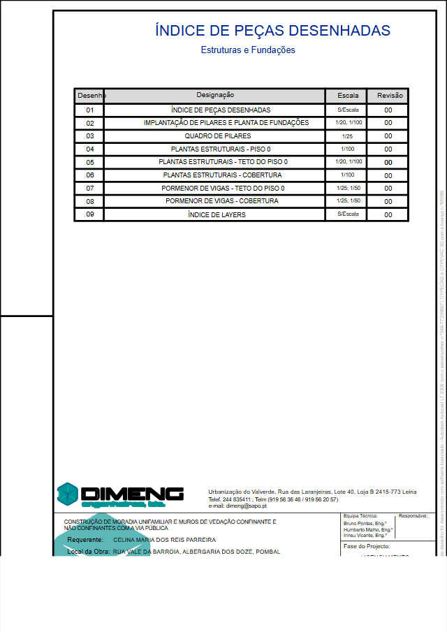
1 · Índice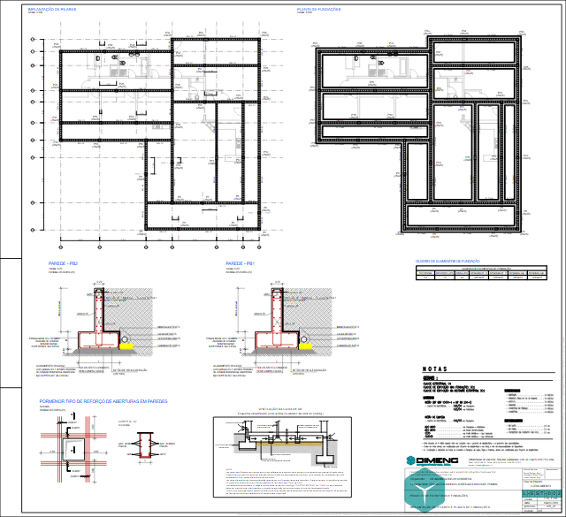
2 · Fundações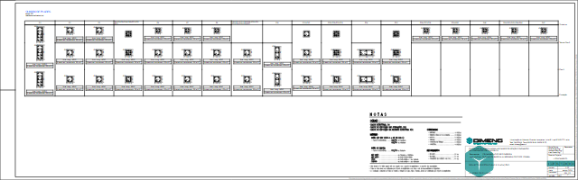
3 · Quadro de pilares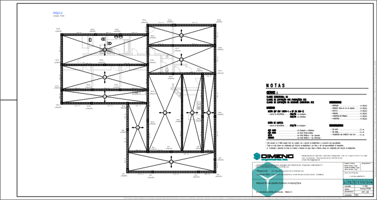
4 · Piso 0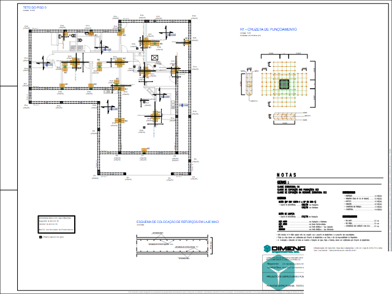
5 · Teto do piso 0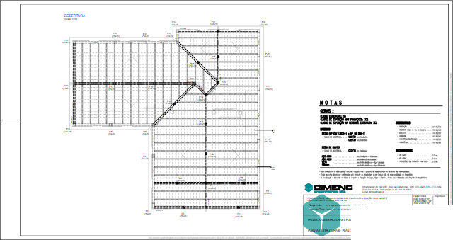
6 · Cobertura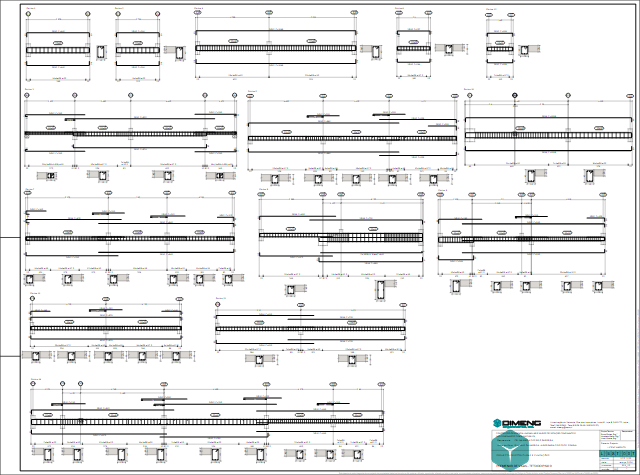
7 · Vigas, piso 0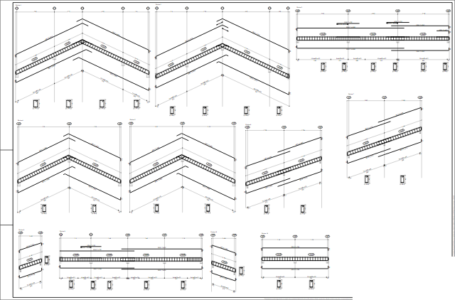
8 · Vigas, cobertura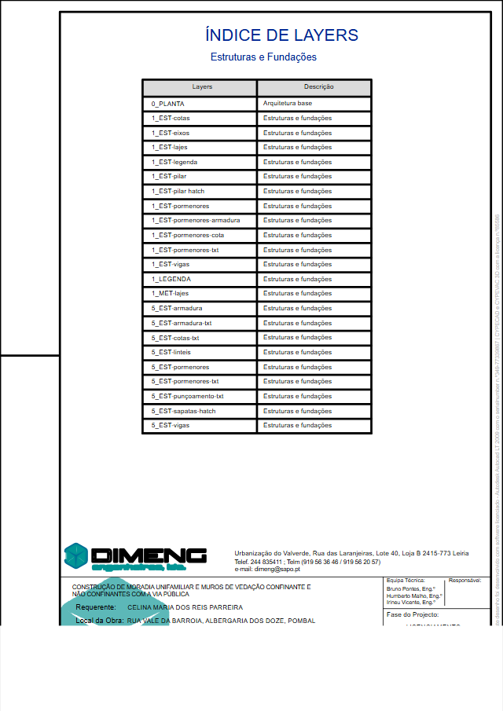
9 · CamadasAs nove folhas do ficheiro, desenhadas pela plataforma a partir do DWFX. Clique numa para abrir em tamanho real.
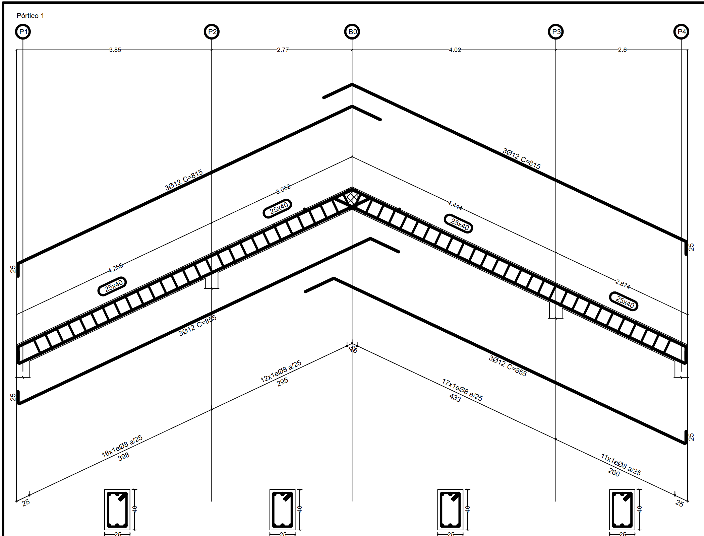
Pórtico 1 | 25 | 40 | 3.85 | 2.77 | 4.02 | 2.6 | 4.256 | 3.062 | 4.444 | 2.874 | 25x40 | 25x40 | 25x40 | 25x40 | P1 | P2 | B0 | P3 | P4 | 16x1eØ8 a/25 | C=815 | 3Ø12 | ...
O que acontece entre o upload e a folha preenchida.
A vossa folha Vigas, preenchida pela plataforma
As mesmas colunas do vosso Excel, os mesmos cinco campos que hoje escrevem à mão, e o betão e a cofragem calculados com as vossas fórmulas. Cobertura, folha 8.
| Identificação | Qtd | Comp. (m) | Larg. (m) | Alt. (m) | Betão (m³) | Cofragem (m²) | Validação |
|---|---|---|---|---|---|---|---|
| Pórtico 1P1-P2-B0-P3-P4 | 1 | 14,636 | 0,25 | 0,40 | 1,464 | 12,44 | igual ao seu Excel |
| Pórtico 2B1-P6-P7-P8-B2 | 1 | 14,635 | 0,20 | 0,40 | 1,171 | 11,71 | igual ao seu Excel |
| Pórtico 3P40-P41-P42-P43 | 1 | 15,121 | 0,20 | 0,40 | 1,210 | 12,10 | igual ao seu Excel |
| Pórtico 4P33-P47-P35 | 1 | 11,350 | 0,20 | 0,40 | 0,908 | 9,08 | igual ao seu Excel |
| Pórtico 5P14-P40-P29 | 1 | 11,570 | 0,20 | 0,40 | 0,926 | 9,26 | igual ao seu Excel |
| Pórtico 6P16-P38-P43 | 1 | 7,952 | 0,20 | 0,40 | 0,636 | 6,36 | igual ao seu Excel |
| Pórtico 7P32-P45-P44 | 1 | 7,804 | 0,20 | 0,40 | 0,624 | 6,24 | igual ao seu Excel |
| Pórtico 8P43-P39 | 1 | 2,385 | 0,20 | 0,40 | 0,191 | 1,91 | igual ao seu Excel |
| Pórtico 9B0-P7-P36-P37-P39 | 1 | 14,120 | 0,20 | 0,40 | 1,130 | 11,30 | igual ao seu Excel |
| Pórtico 10P39-P44 | 1 | 2,534 | 0,20 | 0,40 | 0,203 | 2,03 | igual ao seu Excel |
| Pórtico 11P44-P46-P47 | 1 | 6,620 | 0,20 | 0,40 | 0,530 | 5,30 | igual ao seu Excel |
| Total da cobertura | 8,991 | 87,71 |
Pilares
O quadro de pilares da folha 3 traz os 47 pilares agrupados por secção, exatamente como o Ricardo os agrupa no Excel. Transcrição direta. As alturas vêm das cotas de piso.
Sapatas e lajes
Secção S1: 75x40 do quadro de fundação, igual ao Excel. Comprimentos e dimensões das lajes vêm das cotas da planta.
Armaduras
O projeto traz a armadura real de cada elemento (3Ø12, estribos Ø8 a/25). Podemos usar a do projeto ou manter as vossas regras de estimativa. Decisão vossa.
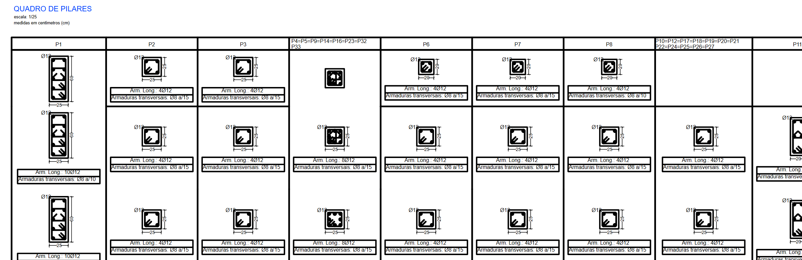
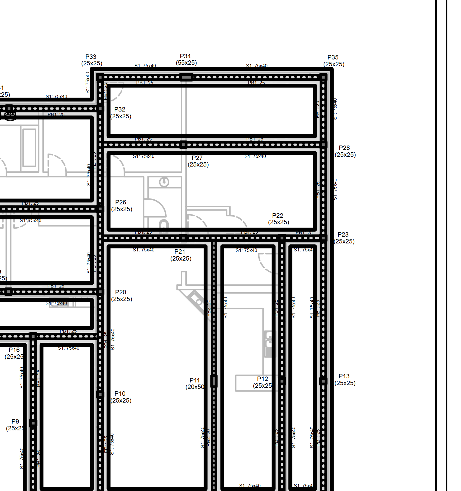
O DWG de arquitetura, aberto pela plataforma
Sem AutoCAD. Da esquerda para a direita: a planta tal como está no ficheiro, e a lista do que a plataforma tirou dela sem ninguém clicar em nada.
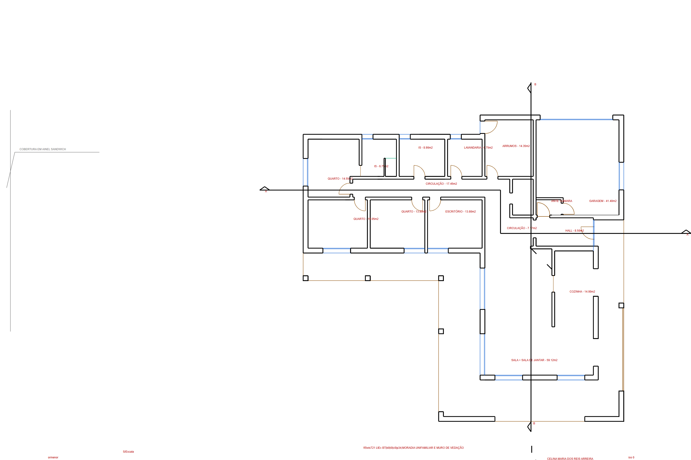
A vossa folha de acabamentos: o que já sai preenchido e o que ainda não
No formato da folha "Medições casa Acabamentos". A verde, o que sai do ficheiro. A cinzento, o que depende da prova de conceito.
| Art. | Descrição | Un | Quant. | Comp. | Larg. | Alt. | Origem |
|---|---|---|---|---|---|---|---|
| 13.1 | Teto falso · Hall | m² | 1,00 | 8,50 | área escrita na planta | ||
| 13.1 | Teto falso · Cozinha | m² | 1,00 | 14,00 | área escrita na planta | ||
| 13.1 | Teto falso · Sala + jantar | m² | 1,00 | 59,12 | área escrita na planta | ||
| 14.2 | Mosaico · Cozinha, com desperdício 1,1 | m² | 1,00 | 15,40 | 1,00 | área × 1,1, o vosso fator | |
| 16.1 | Caixilharia · V15 (garagem) | m² | 1,00 | 5,26 | a confirmar | largura da cota; altura do alçado | |
| 16.1 | Caixilharia · V5 e V6 | m² | 2,00 | 3,00 | a confirmar | largura da cota; altura do alçado | |
| 15.1 | Portas interiores | un | 12,00 | 0,80 | a confirmar | contadas na planta; largura dos vãos V11 a V14 | |
| 12.1 | Pintura · Quarto 13,80 (perímetro × 2,60) | m² | 1,00 | 16,44 | 2,60 | divisão fechada pelas paredes; área calculada 13,70 = escrita 13,80 | |
| 12.1 | Pintura · Hall (perímetro × 2,60) | m² | 1,00 | 14,36 | 2,60 | área calculada 8,52 = escrita 8,50 | |
| 12.1 | Pintura · Garagem (perímetro × 2,60) | m² | 1,00 | 27,32 | 2,60 | no seu Excel: 27,20 | |
| 12.2 | Azulejo · IS 8,90, até 2,60, fator 1,2 | m² | 1,00 | 13,52 | 2,60 | perímetro fechado; no seu Excel: 13,10 a 13,93. Que parede leva azulejo é decisão vossa | |
| 12.1 | Pintura · Sala + cozinha + circulação | m² | 1,00 | 77,36 | 2,60 | abertas entre si: medidas em conjunto, 94,9 m² contra 97,7 escritos; separar é decisão vossa | |
| 10.1 | ETICS · paredes exteriores | m² | 1,00 | perímetro exterior | 3,00 | prova de conceito |
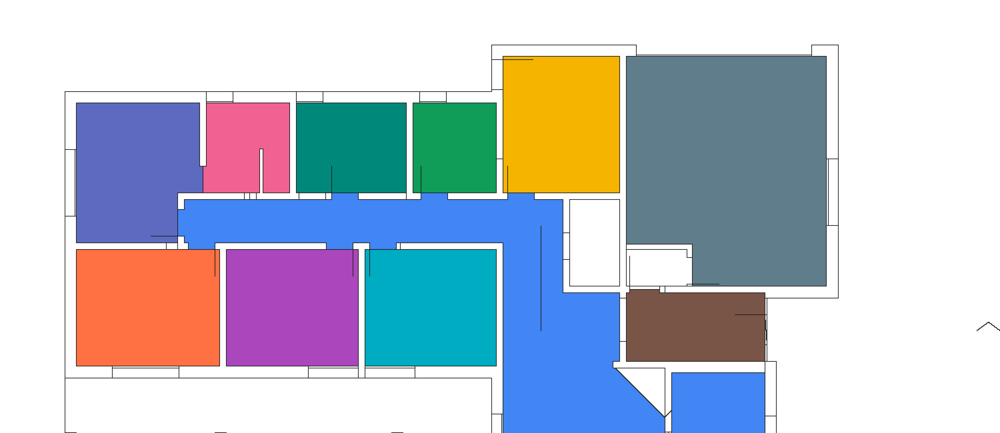
O que já sai do ficheiro: tetos e pavimentos das 15 divisões, os 16 vãos com largura, as portas, a legenda de acabamentos exteriores, e agora também o perímetro das divisões fechadas, que é o que o Ricardo mede hoje ao clicar linha a linha.
O que continua por provar: divisões abertas entre si têm de ser separadas por vós, o perímetro exterior para o ETICS, e se o mesmo método aguenta os ficheiros de outros arquitetos. É isso que a prova de conceito valida com mais dois projetos.
Largue aqui os vossos ficheiros. Nada é pré-calculado.
A leitura corre neste browser, à frente de si, com o mesmo leitor que produziu os ecrãs anteriores. O ficheiro nunca sai do seu computador. No fim, descarrega um Excel com as medições.
Estabilidade
Arquitetura
Demonstração sem servidor: os ficheiros são lidos localmente e não são enviados nem guardados. Na plataforma, o DWG é convertido automaticamente e as divisões abertas entre si, o perímetro exterior e a cobertura entram depois da prova de conceito.
Onde somos frontais: duas coisas ainda não estão provadas
Preferimos dizer isto agora do que prometer o que não se cumpre. É o único ponto da proposta que entra com um teste antes do compromisso.
Áreas, vãos, cotas, legendas
Texto no ficheiro. Extração exata, sem inteligência artificial e sem margem de erro de leitura.
Perímetros de cada divisão
É o que o Ricardo hoje faz ao clicar linha a linha. A 16/09 fechámos as divisões do vosso DWG a partir das paredes: 9 fechadas com a área calculada a bater com a escrita pelo arquiteto a menos de 0,2 m², a garagem fechada mas marcada para confirmar. Falta separar as divisões abertas entre si, o perímetro exterior, e provar com ficheiros de outros arquitetos.
O que é cada parede
Nenhum ficheiro diz se uma parede de 0,15 é tijolo ou pladur. A plataforma agrupa por espessura e por legenda, o Ricardo classifica cada grupo de uma vez. Minutos, não horas.
Obras, tarefas encadeadas e diário de obra
Esboço navegável. Clique em Obras ou Diário. A sequência de tarefas é a vossa, tirada do Excel de tarefas de produção. O aspeto final é desenhado convosco.
Obra 2026-464 · Moradias Curvac
Diário de obra · 2026-464 · terça-feira
Faturas de fornecedores: do email ao PHC, com um clique vosso no meio
O fluxo que o Ricardo pediu: receção, leitura, fornecedor, obra, validação por uma pessoa, integração no PHC pela API que já têm.
Faturas recebidas por email · hoje
Orçamentação, medições, cotações e autos, ligados entre si
As medições alimentam o orçamento, o orçamento alimenta as cotações e os autos. Clique nas quatro áreas.
Orçamento · Capítulo 3, Betão
| Art. | Rubrica | Quant. | Preço | Origem |
|---|---|---|---|---|
| 3.1 | Betão de limpeza C16/20, 10 cm | 26,72 m³ | 66,25 € | fatura de julho |
| 3.2.1 | Betão C30/37 hidrofugado, sapatas | 89,40 m³ | 77,75 € | cotação aceite |
| 5.1 | Varão A500, Ø12 | 4.210 kg | 1,16 € | preço de 2022, rever |
| 6.1 | Bloco térmico de 25 | 1.980 un | 1,07 € | preço de 2022, rever |
Medições · Estabilidade
Cotações · Cofragem, obra 2026-464
Autos de medição · obra 2026-433
Cobranças e o painel da administração
Quanto foi faturado, recebido e está em dívida, por cliente e por obra, com antiguidade e alertas. E um painel simples com os indicadores, ao qual se pode perguntar em linguagem natural.
Cobranças · valores a receber
| Cliente · obra | Faturado | Recebido | Em dívida | Antiguidade |
|---|---|---|---|---|
| Obra 2026-433 · auto 2 | 48.200 € | 31.900 € | 16.300 € | vencida há 23 dias |
| Obra 2026-425 · auto 4 | 62.500 € | 62.500 € | 0 € | liquidada |
| Obra 2026-464 · adjudicação | 150.000 € | 120.000 € | 30.000 € | vence em 12 dias |
Painel · setembro
Ligado ao que já têm. Os dados são vossos. A equipa fica autónoma.
Respostas ao ponto 16, por escrito, para não ficarem para depois. E a formação do ponto 15, com os vossos casos e não com exemplos genéricos.
PHC
Pela API que já têm desenvolvida: clientes, fornecedores, artigos, faturação, pagamentos e conta corrente. Se faltar um ponto de ligação, identifica-se antes de arrancar.
Projetos e ficheiros
DWG, DWFX e PDF dos projetistas, os vossos Excel e os documentos de cada obra, arquivados por obra e pesquisáveis.
Microsoft 365
Entrada com as contas da empresa (Entra ID). Email da empresa para faturas e cotações. Sem portal de fornecedores enquanto não se justificar.
Alojamento e cópias
Servidores na União Europeia, cópias de segurança diárias, recuperação em caso de falha. Os dados pertencem à Concroc e saem em formatos abertos se a relação terminar.
Acessos e registo
Perfis por pessoa, níveis de acesso por área, registo de quem fez o quê. RGPD cumprido.
Formação, ponto 15
Sessões práticas por fase, com as vossas obras e os vossos ficheiros: usar a plataforma, escrever pedidos ao assistente, validar medições, boas práticas de segurança. Acompanhamento da adoção nos primeiros meses.
A plataforma aponta. As pessoas decidem.
O que passa a ser automático
- Ler os projetos e preencher as folhas de medição com as vossas fórmulas
- Ler as faturas de fornecedores e sugerir a obra
- Atualizar preços de materiais a partir das faturas reais
- Enviar pedidos de cotação e montar o mapa comparativo
- Atualizar os mapas de controlo de obra e os saldos por fornecedor
- Abrir a tarefa seguinte quando a anterior fecha; avisar quando um prazo passa
O que fica sempre com a equipa
- Validar cada medição antes de entrar no orçamento
- Classificar o que é cada parede e cada acabamento
- Aprovar cada fatura antes de entrar no PHC
- Adjudicar a subempreiteiros e fornecedores
- Definir margens e fechar o orçamento final
- Decidir as percentagens dos autos de medição
Nunca erra em silêncio: tudo o que a plataforma não tem a certeza fica sinalizado para uma pessoa.
Falar com a plataforma, por voz ou por texto
Quatro situações reais: à saída de uma obra, a preparar um orçamento, uma em que o assistente recusa decidir sozinho, e a preparação de um documento para o cliente.
Os valores nestes exemplos são ilustrativos. O assistente usa sempre os vossos dados reais.
Quatro fases, do chão ao retorno
Cada fase entra em produção e é aceite antes da seguinte. Os módulos vão ficando disponíveis à medida que ficam prontos, como o Ricardo preferia.
Obras, faturas e acessos
- Obras e tarefas encadeadas
- Arquivo por obra
- Faturas de fornecedores
- Integração PHC
- Acessos, perfis e segurança
Medições e orçamento
- Medições de estabilidade
- Orçamentação com histórico e preços
- Cotações e mapa comparativo
- Autos de medição via PHC
Cobranças, banca e visão
- Cobranças e dívida por cliente e obra
- Importação bancária e conciliação com o PHC
- Dashboards de gestão
- Perguntas em linguagem natural aos dados
Assistente, documentos e site
- Assistente sobre a empresa, por voz e texto
- Automatização documental
- Diário de obra
- Simulador de orçamento no website
- Módulo de arquitetura, se a prova passar
- Formação da equipa
O valor que ouviram na reunião. Sem surpresas.
- Na adjudicação30% · 13.500 €
- Fase 1 em produção20% · 9.000 €
- Fase 2 em produção20% · 9.000 €
- Fase 3 em produção20% · 9.000 €
- Fase 4 aceite10% · 4.500 €
- Possibilidade de incluir os 2 anos no projeto (12.000 €)
- Renovável ano a ano
- Sem custos por utilizador
- Prazo do núcleo: 2,5 a 3 meses
- Âmbito e aceitação escritos por fase
- Desenvolvimentos do parceiro PHC, se necessários, ficam do lado da Concroc